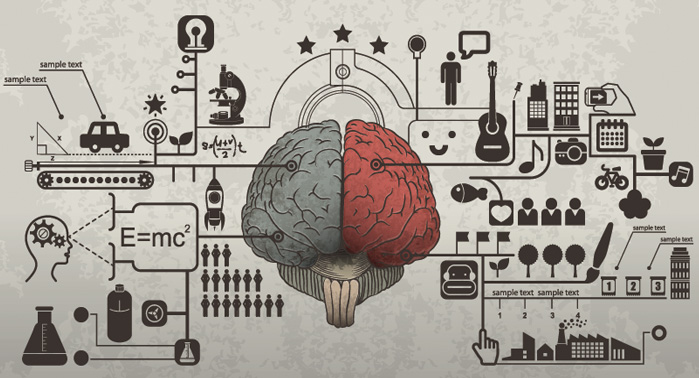

¿Qué es el Razonamiento?
El razonamiento se refiere al proceso mental que utilizamos para llegar a conclusiones o inferencias basadas en la información disponible, la lógica y el pensamiento crítico. Es una actividad cognitiva que implica analizar, evaluar y sacar conclusiones a partir de premisas o evidencias.
El razonamiento nos permite hacer conexiones entre ideas, identificar patrones, resolver problemas y tomar decisiones informadas. Se basa en la capacidad de pensar de manera lógica y estructurada, utilizando reglas y principios de la lógica y el razonamiento válido.
Tipos de Razonamiento
- Razonamiento deductivo:: Se parte de premisas generales o universales y se llega a una conclusión específica. Por ejemplo, si todas las manzanas son frutas y tengo una manzana, entonces puedo concluir que tengo una fruta.
- Razonamiento inductivo: Se parte de observaciones o casos específicos y se llega a una conclusión general. Por ejemplo, si observo que todas las manzanas que he visto son rojas, puedo inferir que todas las manzanas son rojas.
- Razonamiento analítico: Se utiliza para descomponer un problema o situación en partes más pequeñas y analizar cada una por separado antes de llegar a una conclusión general. Es comúnmente utilizado en la resolución de problemas matemáticos o en el análisis de información compleja.
- Razonamiento crítico: Implica evaluar y cuestionar la información, las ideas o los argumentos presentados, considerando la lógica, la evidencia y las posibles implicaciones. Se utiliza para evaluar la validez y la solidez de los argumentos y tomar decisiones informadas.
Importancia del Razonamiento
El razonamiento es importante porque nos permite resolver problemas, tomar decisiones informadas, desarrollar pensamiento crítico, comunicarnos efectivamente y potenciar nuestro desarrollo intelectual. Es una habilidad esencial en diversas áreas de la vida y nos ayuda a navegar de manera más efectiva y satisfactoria en nuestro entorno personal y profesional.
